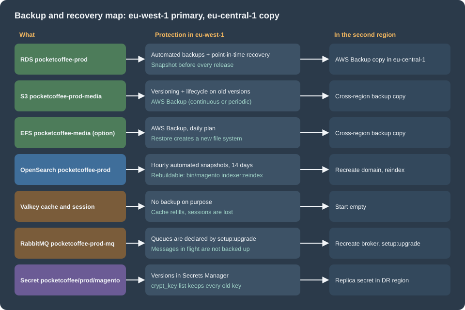

Cloud: Autoscaling, Observability, Backups and Security
|
This content was generated with the assistance of AI and should be verified against the official documentation before being relied on in production. |
This page was written against Magento Open Source and Adobe Commerce 2.4.9 (generally available 2026-05-12) and Mage-OS 3.6.0, PHP 8.5, MySQL 8.4 on Amazon RDS, OpenSearch 3.x, Valkey 9 and RabbitMQ 4.3 as the shared baseline of this series, nginx 1.29, Kubernetes 1.36 and 1.37 on EKS, OpenTofu 1.12 with the AWS provider 6.x, hipages/php-fpm_exporter 2.2.0, and checked on 2026-10-29. The Magento facts were read in the source of the public magento/magento2 repository (branch 2.4-develop: app/etc/di.xml, lib/internal/Magento/Framework/Logger/Handler/Base.php and System.php, lib/internal/Magento/Framework/Encryption/Encryptor.php, app/code/Magento/EncryptionKey/Console/Command/, app/code/Magento/Sales/Console/Command/EncryptionPaymentDataUpdateCommand.php, app/code/Magento/Developer/Console/Command/) and in the Adobe documentation cited after each example. The YAML listings were validated with kubeconform -strict against the Kubernetes 1.36 schemas (custom resources are skipped by -ignore-missing-schemas), the OpenTofu listings with tofu init -backend=false, tofu validate and tofu fmt -check, the shell listings with shellcheck, the PHP and XML listings with php -l and xmllint, and the PHP-FPM pool file with php-fpm -t. Nothing was created in an AWS account and no Magento store was started for this page, so the AWS-side behaviour (WAF, AWS Backup, CloudWatch, Secrets Manager rotation) is as documented, not as observed, and the Magento classes shown are checked for syntax and against the source, not run.
The deployment of Pocket Coffee on EKS is described in Cloud: Reference Architecture and Cloud: EKS Infrastructure and Helm Deployment: the Deployment pocketcoffee-web runs nginx and PHP-FPM as two containers behind the Varnish StatefulSet pocketcoffee-varnish, the database is the RDS instance pocketcoffee-prod, search is the OpenSearch domain pocketcoffee-prod, Valkey holds the cache and the sessions, RabbitMQ is the broker pocketcoffee-prod-mq, media is in the bucket pocketcoffee-prod-media, and the secrets are in Secrets Manager. This page is about the day after: how the shop scales with traffic, how to see what it is doing, how to get it back after a loss, and how to protect and rotate what it depends on. Generic fundamentals are linked rather than repeated: Kubernetes autoscaling, Monitoring and observability on AWS, Amazon RDS, Secrets Manager and KMS. The queue consumers and the cron Job are scaled and monitored on Cloud: Cron, Queue Consumers and Indexers; the release sequence is on Cloud: Releases and Zero-Downtime Deployments. The same operations for PrestaShop, with the same tools, are on the PrestaShop page; this page keeps what is specific to Magento.

What there is to operate
| Concern | Where the signal or the data is | What Magento adds |
|---|---|---|
Load |
CPU of the |
Most page views never reach PHP, so the load on |
Errors |
|
Several files per pod, none of them on stdout by default |
Database |
RDS metrics, the slow query log, Database Insights |
Indexers, the cron |
Data to recover |
The RDS instance, the media bucket (or EFS), the secret |
OpenSearch, Valkey and Varnish are rebuilt, not restored; RabbitMQ holds work in flight only |
Access |
The Admin URL, the login pages, the REST and GraphQL endpoints, the payment callbacks |
The Admin frontName is a configuration value, and 2FA is a module that is enabled by default |
Keys |
|
The encryption key is a list of keys that only grows; rotating it does not by itself re-encrypt stored data |
Autoscaling the web tier
A Magento pod is a fixed pool of PHP-FPM workers, as for any PHP shop: when every worker is busy, requests wait in the listen queue of the FastCGI socket and then time out at nginx, often before the CPU of the pod is saturated, because the workers wait for the database, for OpenSearch or for a payment call. Two things are specific to Magento and change how the HPA is tuned.
First, Varnish sits in front. With the full page cache at the edge of the cluster (see Cloud: Varnish and Full Page Cache on Kubernetes), the traffic that reaches pocketcoffee-web is the misses, the passes (cart, checkout, customer account) and the API calls. A campaign e-mail raises the visitors tenfold and the load on PHP only as much as the cache is cold for the landing pages; a cache purge after a release does the opposite, and sends the whole catalogue to PHP at once. The HPA therefore has to react quickly to a sudden rise and the minimum has to cover a cold cache. Second, the number of pods is bounded by the database: each running request holds a database connection, so maxReplicas x pm.max_children plus the cron Job, the consumers and the migration Job must fit under max_connections. The arithmetic and RDS Proxy are in Cloud: Managed Database (RDS and Aurora); choose maxReplicas from it, not from the size of the cluster.
The HorizontalPodAutoscaler
The HorizontalPodAutoscaler computes CPU utilisation as a percentage of the CPU request of the containers of the pod and reports unknown if there is no request, so the php-fpm container needs one that reflects real use; the sidecars count in the average too. The listing scales on two metrics: the CPU of the pod and the number of busy workers per pod (phpfpm_active_processes, next section). With two metrics the controller computes a desired number of replicas for each and takes the larger.
apiVersion: autoscaling/v2
kind: HorizontalPodAutoscaler
metadata:
name: pocketcoffee-web
namespace: pocketcoffee
labels:
app.kubernetes.io/name: pocketcoffee-magento
app.kubernetes.io/component: web
spec:
scaleTargetRef:
apiVersion: apps/v1
kind: Deployment
name: pocketcoffee-web
minReplicas: 3
maxReplicas: 12
metrics:
- type: Resource
resource:
name: cpu
target:
type: Utilization
averageUtilization: 65
- type: Pods
pods:
metric:
name: phpfpm_active_processes
target:
type: AverageValue
averageValue: "8"
behavior:
scaleUp:
stabilizationWindowSeconds: 0
policies:
- type: Percent
value: 100
periodSeconds: 60
- type: Pods
value: 4
periodSeconds: 60
selectPolicy: Max
scaleDown:
stabilizationWindowSeconds: 600
policies:
- type: Pods
value: 1
periodSeconds: 120The numbers follow from the pool of the next section: with pm.max_children = 16, a target of 8 busy workers keeps half of the workers free for a burst while new pods start. Three is the minimum so that the loss of one availability zone leaves two pods and the PodDisruptionBudget pocketcoffee-web has room to drain nodes. Scale up fast and scale down slowly, because a new pod starts with a cold OPcache and, in the layout of this series, an empty var/ (it is an emptyDir), which is the slowest the shop will ever be. The Helm chart owns the HPA as the template hpa.yaml with web.replicas as the initial replica count; leave spec.replicas out of the Deployment when the HPA is enabled, or every helm upgrade resets the count (see Cloud: EKS Infrastructure and Helm Deployment).
The Pods metric needs an adapter that exposes it through the custom.metrics.k8s.io API: the Kubernetes SIGs prometheus-adapter with a rule over phpfpm_active_processes, or KEDA, which replaces the HPA by a ScaledObject (KEDA is already used for the consumers). The rule, the PodMonitor and the trade-off are the same as for WordPress and are in Releases, Upgrades and Autoscaling on Kubernetes. Until the adapter exists, delete the Pods entry and keep the CPU metric: an HPA that lists a metric it cannot read stops scaling with FailedGetPodsMetric.
Nodes
The HPA adds pods; it does not add nodes. Pods that do not fit stay Pending until the node layer reacts: Karpenter, or EKS Auto Mode which runs it for you, creates a node for them and removes empty ones later; both are described in EKS clusters. Three consequences for this shop. First, set the CPU and memory requests of both containers honestly, because the node scheduler packs pods by requests. Second, an Auto Mode node is replaced at most every 21 days and Karpenter consolidates nodes, so pods are evicted regularly: keep the PodDisruptionBudget, a preStop pause so that nginx stops receiving traffic before the container ends, and a terminationGracePeriodSeconds longer than the slowest checkout request (a pod killed in the middle of a payment callback is where graceful termination costs orders; see Scheduling and disruptions). Third, the Varnish pods are memory caches: evicting one empties it, so the PodDisruptionBudget of pocketcoffee-varnish should allow one pod at a time and the node pool that hosts them should not be consolidated aggressively. The consumers (pocketcoffee-consumer-<slug>) scale on queue length with KEDA and need no HPA of their own.
What scaling does not fix
-
The database and OpenSearch. Another pod does not make a slow query or a slow search faster; it runs the next one in parallel. If
phpfpm_listen_queuegrows while the CPU of the pods is low, look at the slow queries (below) and at the search domain before raisingmaxReplicas. -
The Admin. A catalog import, a reindex from the Admin or a large export is one long request with a large memory use. Do not size the web pool for it: route the Admin to its own Deployment, as described in the Admin section below, or run the work as a Job.
-
The cache purge. Flushing every cache after a release sends all the traffic to PHP. The warm-up and the order of the release are on Cloud: Releases and Zero-Downtime Deployments.
-
The cron Job.
pocketcoffee-cronis a CronJob, not part of the HPA; its runs must not overlap (concurrencyPolicy: Forbid).
PHP-FPM metrics
PHP-FPM publishes the state of its pool on a status page when pm.status_path is set. The page is served by FPM itself over FastCGI, not by nginx, so it is reachable only by a client that speaks FastCGI to 127.0.0.1:9000 inside the pod, which is what the exporter does; nginx has no location that passes /status on, so it is not exposed to the internet. The Magento nginx configuration (the nginx.conf.sample shipped with Magento) passes only the entry points index.php, get.php, static.php, health_check.php and a few others to FPM, which keeps the status page out of reach; keep that list closed when you adapt it.
[www]
listen = 127.0.0.1:9000
pm = dynamic
pm.max_children = 16
pm.start_servers = 6
pm.min_spare_servers = 4
pm.max_spare_servers = 8
pm.max_requests = 500
pm.status_path = /status
ping.path = /ping
ping.response = pong
request_terminate_timeout = 120s
clear_env = no
catch_workers_output = yesThe file is read after the defaults of the official image because of its name (zz-) and was checked with php-fpm -t in php:8.4-fpm (the pool keys are the same on PHP 8.5; they are PHP’s, not Magento’s). clear_env = no matters for the secrets: with the default clear_env = yes the PHP code cannot read the environment variables of the container, and env.php of this series reads everything with getenv(). Size pm.max_children from the memory of a worker under your own traffic (a Magento worker with the compiled code and a warm OPcache is far larger than a blog worker; measure a catalog page, a checkout request and an Admin save separately) and the memory limit of the container, and set pm.max_requests so that a leaky extension is bounded.
The exporter is a sidecar of the pocketcoffee-web pod. The community project hipages/php-fpm_exporter (not an official PHP or Magento project) turns the status page into Prometheus metrics on port 9253. There are two documented ways to collect FPM metrics, and the choice is about who owns the Prometheus stack:
| Option | Notes |
|---|---|
Exporter sidecar and a |
One more container per pod, one more scrape target; works with any Prometheus-compatible collector, including the managed ones; the metrics are the ones used by the HPA above. |
An APM agent or the CloudWatch agent |
No sidecar, but the busy-worker count is not what an APM agent reports by default, so the HPA would scale on something else; useful as a complement, not as the HPA signal. |
The metrics that matter are phpfpm_active_processes (the value the HPA scales on), phpfpm_idle_processes, phpfpm_listen_queue (requests waiting for a free worker; anything above zero for more than a few seconds is saturation), phpfpm_max_children_reached (alert on its increase, not its value) and phpfpm_slow_requests (only when request_slowlog_timeout is set). Check the names on the /metrics endpoint of the version you deploy before building a dashboard or an HPA on them. The excerpt of the Deployment shows the pod with the sidecar and the probes:
apiVersion: apps/v1
kind: Deployment
metadata:
name: pocketcoffee-web
namespace: pocketcoffee
labels:
app.kubernetes.io/name: pocketcoffee-magento
app.kubernetes.io/component: web
spec:
replicas: 3
selector:
matchLabels:
app.kubernetes.io/name: pocketcoffee-magento
app.kubernetes.io/component: web
template:
metadata:
labels:
app.kubernetes.io/name: pocketcoffee-magento
app.kubernetes.io/component: web
spec:
serviceAccountName: pocketcoffee-magento
terminationGracePeriodSeconds: 90
topologySpreadConstraints:
- maxSkew: 1
topologyKey: topology.kubernetes.io/zone
whenUnsatisfiable: ScheduleAnyway
labelSelector:
matchLabels:
app.kubernetes.io/name: pocketcoffee-magento
app.kubernetes.io/component: web
containers:
- name: php-fpm
image: "123456789012.dkr.ecr.eu-west-1.amazonaws.com/pocketcoffee/magento:<git-sha>"
envFrom:
- secretRef:
name: pocketcoffee-magento
ports:
- name: fastcgi
containerPort: 9000
resources:
requests: {cpu: "1", memory: 2Gi}
limits: {memory: 3Gi}
volumeMounts:
- name: var
mountPath: /var/www/html/var
- name: nginx
image: nginx:1.30
ports:
- name: http
containerPort: 8080
readinessProbe:
httpGet:
path: /health_check.php
port: http
periodSeconds: 10
failureThreshold: 3
livenessProbe:
httpGet:
path: /healthz
port: http
periodSeconds: 20
failureThreshold: 3
resources:
requests: {cpu: 50m, memory: 64Mi}
limits: {memory: 128Mi}
lifecycle:
preStop:
exec:
command: ["sh", "-c", "sleep 15 && nginx -s quit"]
- name: php-fpm-exporter
image: hipages/php-fpm_exporter:2.2.0
args: ["server", "--phpfpm.scrape-uri=tcp://127.0.0.1:9000/status"]
ports:
- name: fpm-metrics
containerPort: 9253
resources:
requests: {cpu: 10m, memory: 32Mi}
limits: {memory: 64Mi}
volumes:
- name: var
emptyDir:
sizeLimit: 2Gi
---
apiVersion: monitoring.coreos.com/v1
kind: PodMonitor
metadata:
name: pocketcoffee-web
namespace: pocketcoffee
spec:
selector:
matchLabels:
app.kubernetes.io/name: pocketcoffee-magento
app.kubernetes.io/component: web
podMetricsEndpoints:
- port: fpm-metrics
interval: 15sThe readiness probe is /health_check.php of Magento and the liveness probe is a static /healthz served by nginx, on purpose: pub/health_check.php checks the backends (database, cache) and a database outage must take the pods out of the Service, not restart them in a loop; the behaviour of the script is described on Cloud: EKS Infrastructure and Helm Deployment, and the generic rules in Health probes and lifecycle. The PodMonitor is a custom resource of the Prometheus Operator, so kubeconform skips it with -ignore-missing-schemas; the rest was validated against the Kubernetes 1.36 schemas. The real chart also mounts env.php, the nginx and PHP ConfigMaps, the media volume when media.mode is efs, and the rest of the security context. The alerts that earn a page are an increase of phpfpm_max_children_reached over five minutes, a phpfpm_listen_queue above zero for two minutes, a 5xx rate at the load balancer, and a Varnish hit ratio that drops after a release without recovering.
Application monitoring: New Relic, OpenTelemetry and Adobe Observability
Metrics of the pool say that the shop is slow; a trace says why. Three options exist, and Adobe’s statements about each are different.
| Option | What the sources say | Verify |
|---|---|---|
New Relic APM with the PHP agent |
Adobe’s documentation describes New Relic monitoring of Commerce through PHP agents and marks the page as applying to Adobe Commerce on cloud infrastructure and to on-premises projects. The Magento source tree contains the module |
The PHP agent is a PHP extension and a daemon setting, so it belongs in the image (and in the Dockerfile of the build page); read the New Relic documentation for the agent version that supports PHP 8.5 and for running it in containers before choosing it. Adobe’s New Relic pages are written for Adobe Commerce; for Magento Open Source and Mage-OS the module is present in the code, but Adobe’s support statement is not for those editions. |
OpenTelemetry |
The OpenTelemetry project documents zero-code instrumentation of PHP with a PECL extension and Composer packages, configured with the standard variables such as |
It is community software, early in its life, and neither Adobe nor Mage-OS document it. Test it on staging with the real traffic, measure the overhead, and treat it as an experiment until the package has releases you trust. |
Adobe Commerce Observability |
A module ( |
Not available on Magento Open Source or, by that statement, on Mage-OS. The consumers are three more consumers to run (see Cloud: Cron, Queue Consumers and Indexers); the page does not name the systems that receive the data. |
The vendor-neutral choice for a shop that runs the open-source edition on its own cluster is the combination that needs no Adobe entitlement: the exporter above for the pool, the CloudWatch Observability add-on or your own collector for the logs, and either an APM vendor’s PHP agent or the OpenTelemetry extension for traces. Whichever you choose, install it in the image at build time (a PHP extension is not something to add to a running pod), keep it out of the setup:* commands of the migration Job, and watch the memory: an agent adds to the resident memory of every worker, which changes pm.max_children.
Logs
Magento writes its logs to files, not to stdout, and the files are in the var/log directory of the pod, which is an emptyDir in this layout, so they are lost with the pod. In app/etc/di.xml of the 2.4 line the main logger Magento\Framework\Logger\Monolog is configured with three handlers named system, debug and syslog. Magento\Framework\Logger\Handler\System writes var/log/system.log at level INFO, hands records that carry an exception to the exception handler (which writes var/log/exception.log), and Magento\Framework\Logger\Handler\Debug writes var/log/debug.log. The base class Magento\Framework\Logger\Handler\Base builds the path as the base directory of the installation followed by a relative file name, and it strips . and .. from the name, so a stream such as php://stderr cannot be set through a handler’s fileName argument. There is no environment variable that changes this. There are two honest options:
-
Keep the files and ship them. The
varvolume is shared with a log-shipper sidecar (Fluent Bit with thetailinput overvar/log/*.logwriting to its own stdout), exactly as on the PrestaShop page (see Cloud: Autoscaling, Observability, Backups and Security for PrestaShop). Nothing in Magento changes, and the files remain available tokubectl execfor a short time. The cost is a sidecar and a volume shared by two containers. -
Replace the handlers. A small module overrides the
handlersof the main logger with a handler that writes tophp://stderr, so the container output carries the log and no sidecar is needed. The listing shows the class and thedi.xmlof such a module; it is a customisation of your own code, not something Adobe documents, and it was checked for syntax and against the source, not run in a Magento store.
<?php
declare(strict_types=1);
namespace PocketCoffee\Skeleton\Logger\Handler;
use Monolog\Formatter\LineFormatter;
use Monolog\Handler\StreamHandler;
use Monolog\Level;
/**
* Writes every record that reaches the main Magento logger to the standard error of the container.
*/
class Stderr extends StreamHandler
{
public function __construct()
{
parent::__construct('php://stderr', Level::Info);
$this->setFormatter(new LineFormatter(null, null, true));
}
}<?xml version="1.0"?>
<config xmlns:xsi="http://www.w3.org/2001/XMLSchema-instance"
xsi:noNamespaceSchemaLocation="urn:magento:framework:ObjectManager/etc/config.xsd">
<type name="Magento\Framework\Logger\Monolog">
<arguments>
<argument name="handlers" xsi:type="array">
<item name="system" xsi:type="object">PocketCoffee\Skeleton\Logger\Handler\Stderr</item>
<item name="debug" xsi:type="object">PocketCoffee\Skeleton\Logger\Handler\Stderr</item>
</argument>
</arguments>
</type>
</config>The two items replace the system and debug handlers by key (arrays of arguments are merged by item name), so the exception records, which the stock System handler diverts to exception.log, now arrive in the same stream; syslog is left alone. Two caveats. The handler uses the Monolog 3 API (Monolog\Level), which is what composer.json of the 2.4 line requires (monolog/monolog ^3.6); confirm with composer show monolog/monolog in your build. And the debug handler of Magento is conditional on the deployment mode, which this replacement ignores: in production mode a handler at level INFO is the right ceiling, and the shop should never run developer mode in the cluster. Magento also writes var/report/<id> files for uncaught exceptions; they stay on the pod and the error page shows the report id, so keep the log line that contains it.
From the container output to CloudWatch Logs
Once the log is on the container output, collection is the same as for any pod. The Amazon CloudWatch Observability add-on of EKS installs the CloudWatch agent and Fluent Bit and sends the container output of every pod to log groups under /aws/containerinsights/pocketcoffee-prod/ (the application logs in the group application). Whether the add-on is supported on an EKS Auto Mode cluster in your configuration and the IAM role it needs (the managed policy CloudWatchAgentServerPolicy, through EKS Pod Identity or IAM roles for service accounts) are in the AWS documentation; verify both before choosing it over a collector you run yourself.
#!/usr/bin/env bash
set -euo pipefail
CLUSTER=pocketcoffee-prod
REGION=eu-west-1
# The role must carry CloudWatchAgentServerPolicy; the ARN comes from the OpenTofu stack.
aws eks create-addon \
--region "$REGION" \
--cluster-name "$CLUSTER" \
--addon-name amazon-cloudwatch-observability \
--pod-identity-associations "serviceAccount=cloudwatch-agent,roleArn=arn:aws:iam::123456789012:role/pocketcoffee-prod-cloudwatch-agent"
# Log groups are created without an expiry: set one explicitly.
aws logs put-retention-policy \
--region "$REGION" \
--log-group-name "/aws/containerinsights/${CLUSTER}/application" \
--retention-in-days 30Source: Amazon CloudWatch User Guide: Quick Start with the Amazon CloudWatch Observability EKS add-on
A Logs Insights query over the group finds the failures. The Magento line is plain text ([2026-10-29T17:52:51.316648+00:00] main.CRITICAL: message [] [], the main channel from di.xml), so the query matches on text, and the field names of the Kubernetes metadata depend on the collector version, so look at one event before saving it:
fields @timestamp, kubernetes.pod_name, log
| filter log like /main\.(ERROR|CRITICAL|ALERT|EMERGENCY)/
| sort @timestamp desc
| limit 50Alerting on it is a metric filter on the log group with an alarm; the pattern is in Monitoring and observability on AWS.
Slow queries
The database is where a Magento shop spends much of its time, and RDS keeps a log of the statements that took too long. It is off by default: turn it on in the parameter group and export it to CloudWatch Logs, so that it can be searched from the same place as the application logs. The listing is the part of the OpenTofu stack that concerns logging; the instance itself is in Cloud: Managed Database (RDS and Aurora).
terraform {
required_version = ">= 1.8"
required_providers {
aws = {
source = "hashicorp/aws"
version = "~> 6.0"
}
}
}
provider "aws" {
region = "eu-west-1"
}
resource "aws_db_parameter_group" "magento" {
name = "pocketcoffee-magento-mysql84"
family = "mysql8.4"
parameter {
name = "slow_query_log"
value = "1"
}
parameter {
name = "long_query_time"
value = "1"
}
parameter {
name = "log_output"
value = "FILE"
}
}
# On the aws_db_instance "pocketcoffee-prod" of the database page:
# parameter_group_name = aws_db_parameter_group.magento.name
# enabled_cloudwatch_logs_exports = ["error", "slowquery"]
resource "aws_cloudwatch_log_group" "slowquery" {
name = "/aws/rds/instance/pocketcoffee-prod/slowquery"
retention_in_days = 30
}The registry page documents the AWS provider that OpenTofu uses unchanged. The parameter group above holds only the logging parameters; the group of the database page (log_bin_trust_function_creators and the other Magento settings) must contain them as well, so merge the two rather than creating two groups with the same name. The log group is created by RDS the first time a log is exported; declaring it first, with the exact name, gives it a retention. On Aurora MySQL the same parameters live in the cluster parameter group of pocketcoffee-prod-aurora. A long_query_time of 1 second is a starting point: lower it for a week during an investigation, then back, because the log costs I/O and storage.
parse @message /Query_time: (?<qt>[0-9.]+)/
| filter ispresent(qt)
| stats count(*) as slow, max(qt) as worst, avg(qt) as mean by bin(1h)
| sort @timestamp descStatement-level analysis is the job of CloudWatch Database Insights. It replaced the Performance Insights console experience (end of life 2026-07-31), shows the load of the instance by wait event, SQL statement and user (so the runtime user mg_app, the mg_migrate Job and the Admin are separate sources only because they use separate users, one reason for having them), and in its Advanced mode also execution plans and on-demand analysis. The modes, the retention and their cost drivers are in Amazon RDS; choose the mode per instance and check the current wording on the AWS page before relying on the old Performance Insights flags in automation.
What to expect in the log depends on the shop; which statements appear is a question for your own slow log, not for this page. Two Magento tools exist for finding where a query comes from in the code, and both are for a developer environment, not for the cluster:
-
bin/magento dev:query-log:enableturns on Magento’s own database query logger, which writes tovar/debug/db.log(the file logger of the framework; its default threshold is 0.05 seconds and the options of the command are listed by--help). The file is on the pod and is lost with it, and the logger adds work to every query. -
bin/magento dev:profiler:enable(typehtml, the default, orcsvfile) creates the flag filevar/profiler.flag; the HTML output is appended to the pages and the CSV is written tovar/log/profiler.csvand overwritten on each request. The environment variableMAGE_PROFILERdoes the same, and the value2adds the dependency graph. Adobe’s page has no production warning, but a profiler flag in a sharedvarwould profile every request of a pod and put timing data in front of customers; in this layoutvaris per pod, so the flag would apply to that one pod only. Use these on the local environment of Local Development Environments or on a staging replica, and use Database Insights and the slow log in production.
Backups and disaster recovery
A single-server Magento is backed up by a database dump and an archive of the code and pub/media. On EKS the same information is in separate stores with separate recovery points, and only some of them are backed up at all. The question to answer is what is restored, what is rebuilt and whether what is restored is consistent.
| Component | Backup | Recovery |
|---|---|---|
RDS |
Automated backups with point-in-time recovery (retention set on the instance), a manual snapshot before each release, an AWS Backup copy to a second region |
|
Media in S3 |
Bucket versioning with a lifecycle rule for old versions; optionally AWS Backup (continuous or periodic) with a cross-region copy |
Restore an object version, or an AWS Backup restore job into a bucket |
Media on EFS |
AWS Backup, with a cross-region copy |
A restore job creates a new file system; the PersistentVolume is repointed to it |
OpenSearch |
Hourly automated snapshots kept 14 days by the service; manual snapshots to your own S3 bucket optional |
Normally rebuilt: |
Valkey |
None, on purpose |
Start empty; the cache refills, and every session is lost, so every customer signs in again and carts held only in the session disappear (the quote is in the database) |
RabbitMQ |
None of the messages |
Recreate the broker and run |
Secret |
Versions in Secrets Manager, a replica secret in the DR region |
Promote the replica; keep every old |
ECR |
Replication to the DR region; the image is rebuildable from Git |
Pull in the DR cluster |
Chart, |
Git and a versioned state bucket |
|
Three of these rows deserve a sentence each, because the AWS documentation is explicit and the consequence for Magento is not obvious. OpenSearch automated snapshots are for cluster recovery only; the service takes them hourly for domains on OpenSearch and retains up to 336 of them for 14 days, in a bucket it manages. If the cluster goes red, automated snapshots stop, and AWS warns that data can be lost if the state is not corrected within two weeks. Because the catalog and search index of Magento is derived from the database, the usual recovery of a lost domain is a new domain and a reindex, which can take hours for a large catalog; that duration, not the data, is what a snapshot would save. ElastiCache for Valkey can take snapshots, and the AWS documentation says they are available for Valkey, but a cache and a session store are not data to restore: a snapshot of the session group from yesterday signs in sessions that have since ended. For RabbitMQ, Amazon MQ documents the broker, its Multi-AZ cluster deployment and maintenance; no backup of queue messages is documented, so plan on the database being the source of truth and verify the broker’s durability settings (quorum queues in a cluster) on the AWS page for your engine version.
The OpenTofu below is a daily AWS Backup plan that protects the RDS instance, the media bucket and, when it is the media mode, the EFS file system with one plan, and copies the recovery points to a vault in eu-central-1. The instance keeps its own automated backups and point-in-time recovery as well (backup_retention_period on the aws_db_instance, 14 days is a common choice): point-in-time recovery has a granularity of minutes, the AWS Backup plan gives the long retention and the second region. AWS Backup requires S3 Versioning to be enabled on a bucket it protects and recommends a lifecycle expiration for the versions, which the second listing sets.
terraform {
required_version = ">= 1.8"
required_providers {
aws = {
source = "hashicorp/aws"
version = "~> 6.0"
}
}
}
provider "aws" {
region = "eu-west-1"
}
provider "aws" {
alias = "dr"
region = "eu-central-1"
}
variable "protected_resource_arns" {
type = list(string)
description = "ARNs of the RDS instance pocketcoffee-prod, of the bucket pocketcoffee-prod-media and, if used, of the EFS file system pocketcoffee-media"
}
resource "aws_backup_vault" "primary" {
name = "pocketcoffee-primary"
}
resource "aws_backup_vault" "dr" {
provider = aws.dr
name = "pocketcoffee-dr"
}
resource "aws_iam_role" "backup" {
name = "pocketcoffee-backup"
assume_role_policy = jsonencode({
Version = "2012-10-17"
Statement = [{
Effect = "Allow"
Action = "sts:AssumeRole"
Principal = { Service = "backup.amazonaws.com" }
}]
})
}
resource "aws_iam_role_policy_attachment" "backup" {
for_each = toset([
"arn:aws:iam::aws:policy/service-role/AWSBackupServiceRolePolicyForBackup",
"arn:aws:iam::aws:policy/AWSBackupServiceRolePolicyForS3Backup",
"arn:aws:iam::aws:policy/service-role/AWSBackupServiceRolePolicyForRestores",
"arn:aws:iam::aws:policy/AWSBackupServiceRolePolicyForS3Restore",
])
role = aws_iam_role.backup.name
policy_arn = each.value
}
resource "aws_backup_plan" "magento" {
name = "pocketcoffee-daily"
rule {
rule_name = "daily-with-dr-copy"
target_vault_name = aws_backup_vault.primary.name
schedule = "cron(0 2 * * ? *)"
lifecycle {
delete_after = 35
}
copy_action {
destination_vault_arn = aws_backup_vault.dr.arn
lifecycle {
delete_after = 35
}
}
}
}
resource "aws_backup_selection" "magento" {
name = "pocketcoffee-data"
iam_role_arn = aws_iam_role.backup.arn
plan_id = aws_backup_plan.magento.id
resources = var.protected_resource_arns
}terraform {
required_version = ">= 1.8"
required_providers {
aws = {
source = "hashicorp/aws"
version = "~> 6.0"
}
}
}
provider "aws" {
region = "eu-west-1"
}
# The bucket itself is created on the media page; this file adds versioning and the expiry of old versions.
variable "media_bucket" {
type = string
description = "Name of the media bucket"
default = "pocketcoffee-prod-media"
}
resource "aws_s3_bucket_versioning" "media" {
bucket = var.media_bucket
versioning_configuration {
status = "Enabled"
}
}
resource "aws_s3_bucket_lifecycle_configuration" "media" {
bucket = var.media_bucket
rule {
id = "expire-old-versions"
status = "Enabled"
filter {}
noncurrent_version_expiration {
noncurrent_days = 35
}
expiration {
expired_object_delete_marker = true
}
}
depends_on = [aws_s3_bucket_versioning.media]
}Versioning protects the media against what Magento does to it as well as against a mistake: the S3 driver of remote storage overwrites and deletes objects when images are replaced or products are deleted (see Cloud: Media and Remote Storage), and an old version is what brings back a picture that an editor replaced by accident. The expiry of non-current versions after 35 days matches the AWS Backup retention above; without it every replaced image is kept for ever and, per the AWS Backup documentation, every version and delete marker is included in the recovery point.
Before a release and the restore drill
A snapshot before every release is the rollback of the database part of a release; it takes the place of the dump that a single server would make, and it is a step of the release sequence on Cloud: Releases and Zero-Downtime Deployments. The restore drill proves the rest, and it belongs in the calendar (quarterly is a reasonable cadence), not in the incident.
#!/usr/bin/env bash
set -euo pipefail
REGION=eu-west-1
SNAPSHOT="pocketcoffee-prod-pre-$(date -u +%Y%m%d%H%M)"
# 1. Before the release: a manual snapshot that no retention rule deletes.
aws rds create-db-snapshot \
--region "$REGION" \
--db-instance-identifier pocketcoffee-prod \
--db-snapshot-identifier "$SNAPSHOT"
aws rds wait db-snapshot-available \
--region "$REGION" \
--db-snapshot-identifier "$SNAPSHOT"
# 2. The drill: restore the last restorable moment, or a chosen time, into a NEW instance.
aws rds restore-db-instance-to-point-in-time \
--region "$REGION" \
--source-db-instance-identifier pocketcoffee-prod \
--target-db-instance-identifier pocketcoffee-restore-drill \
--use-latest-restorable-time \
--db-subnet-group-name pocketcoffee-prod \
--db-parameter-group-name pocketcoffee-magento-mysql84 \
--no-publicly-accessible
aws rds wait db-instance-available \
--region "$REGION" \
--db-instance-identifier pocketcoffee-restore-drill
aws rds describe-db-instances \
--region "$REGION" \
--db-instance-identifier pocketcoffee-restore-drill \
--query 'DBInstances[0].Endpoint.Address' \
--output textThe restored instance has the data and the engine settings, not the security groups unless you pass them (--vpc-security-group-ids); give it the same subnet group, security group and parameter group as production. Point a staging release at it (database.host of the chart) and check the shop: the home page, a product, a checkout in the payment provider’s test mode, an Admin login, and the numbers of sales_order and customer_entity against what you expect. Then run bin/magento indexer:reindex against a scratch OpenSearch index prefix, because a restored database with a missing index is the usual surprise of the first drill. A drill that ends at "the instance is available" has not shown that the shop works.
For the media, the common incident is one object, not the whole bucket. S3 versioning makes it a copy of an older version onto the current key:
#!/usr/bin/env bash
set -euo pipefail
BUCKET=pocketcoffee-prod-media
KEY="${1:?usage: restore-media.sh catalog/product/a/b/ab-roast.jpg}"
# List the versions of the key, newest first, and take the second one (the one before the current).
VERSION_ID=$(aws s3api list-object-versions \
--bucket "$BUCKET" \
--prefix "$KEY" \
--query 'sort_by(Versions[?Key==`'"$KEY"'`], &LastModified)[-2].VersionId' \
--output text)
if [ "$VERSION_ID" = "None" ]; then
echo "no previous version of $KEY" >&2
exit 1
fi
aws s3api copy-object \
--bucket "$BUCKET" \
--key "$KEY" \
--copy-source "${BUCKET}/${KEY}?versionId=${VERSION_ID}"If the key was deleted, the current version is a delete marker; removing the marker (aws s3api delete-object with its --version-id) makes the previous version current again, and the script above must be adapted to the situation you find. The resized variants under catalog/product/cache/ are derived files that Magento regenerates (they are cached on the local filesystem of the pods per the remote-storage documentation of Adobe), so a missing resized image is not a restore case. For a whole bucket or a whole file system use an AWS Backup restore job; the S3 restore metadata is read from the recovery point, as in Amazon S3 and the AWS Backup documentation, not typed.
OpenSearch: restore or rebuild
Rebuilding is the default and needs no preparation beyond the reindex Job of the chart (pocketcoffee-reindex, see Cloud: Cron, Queue Consumers and Indexers). The decision is about time: if a full reindex of the catalog takes longer than the shop may be without search, keep a recent snapshot. The automated snapshots of the service live in a repository the service manages and are restored through the _snapshot API of the domain; manual snapshots need your own S3 bucket, an IAM role that OpenSearch Service can assume, and a signed request that passes the role to the domain, all described by AWS. The request bodies are small:
PUT _snapshot/pocketcoffee-manual
{
"type": "s3",
"settings": {
"bucket": "pocketcoffee-prod-opensearch-snapshots",
"region": "eu-west-1",
"role_arn": "arn:aws:iam::123456789012:role/pocketcoffee-prod-opensearch-snapshot"
}
}
PUT _snapshot/pocketcoffee-manual/before-release-1
POST _snapshot/pocketcoffee-manual/before-release-1/_restore
{
"indices": "pocketcoffee_*",
"include_global_state": false
}The bucket and role names are placeholders (neither is created by this series), the requests must be signed with an IAM identity that may pass the role and call es:ESHttpPut, and with fine-grained access control the mapped user also needs the snapshot permissions; read the AWS page for the exact policy. Restoring into a domain that already has the index names fails until the existing indices are deleted or closed, so the practical restore is into the new domain of a recovery. The indices are named with the prefix pocketcoffee (the Magento opensearch_index_prefix), which is why the restore pattern is pocketcoffee_*.
The two stores must agree
The database stores the paths of the images and the file store holds them, so a database from Monday with the media of Wednesday is harmless (the extra files are unreferenced) and a database of Wednesday with the media of Monday shows broken product pictures for everything uploaded in between. The rules that follow: restore both to the same moment when you can (a daily plan at 02:00 gives a database and a bucket within minutes of each other); if the media are older, the missing originals are gone and the product pages have to be edited again, while the resized variants regenerate; and a point-in-time restore of the database loses the orders placed between the chosen time and the failure. The payment provider still holds the payments: reconcile its list of transactions against sales_order before reopening, and decide for each missing order whether to recreate it or to refund. That is the largest cost of a database recovery for a shop and the reason to keep the RPO of the database in minutes.
Disaster recovery in a second region
The RPO and the RTO of a regional loss differ from those of a single-instance backup. The database is as old as the last copy in the vault of eu-central-1 (daily with this plan, so up to a day; shorten the schedule or add a cross-region read replica if that is too long), the media are as old as their copy, the secret and the image are replicated, the code is in Git, and OpenSearch, Valkey and Varnish start empty. The RTO is dominated by the steps that are not automatic: applying the OpenTofu stack in the DR region, restoring the database and the media, running the migration Job, reindexing, warming the cache, and changing the DNS record of www.pocketcoffee.example (a health-checked failover record in Route 53 does the last step when the primary is down). Write the order down, rehearse it once a year in a scratch account or region, and keep the runbook outside the platform that it recovers.
AWS WAF in front of the shop
A web ACL in front of the load balancer (or of CloudFront) removes a class of traffic before PHP sees it: known bad inputs, SQL injection patterns, bots with a bad reputation and the brute force against the login forms. It does not replace patching Magento and the extensions (the patch cadence and the incidents are on Security); it buys time between an advisory and the rollout of the fix. The pieces that are specific to Magento are these paths:
| Path | Treatment |
|---|---|
|
Allowed only from the office and VPN addresses, and a rate limit on the |
|
A rate limit per client address on |
|
Token endpoints ( |
|
A rate limit that a shopper cannot reach and a card-testing script does; the number depends on the shop and is to be tuned. |
The payment provider’s callback (the front controller of |
Must be reachable from the provider. Excluded from the managed rule groups, whose body inspection rejects some webhook payloads, and protected instead by the signature that the module verifies and the provider’s published source addresses when it has them (add a generous rate-based rule on the path once the real rate is known). |
The paths of the storefront controllers are those of the core modules (route customer, controller account, actions loginPost, createpost, forgotpasswordpost); confirm them against the routes of your own installation and your theme, because a PWA or a checkout extension can add its own. The first four rows are what the page can say from the platform; the callback path depends on how PocketCoffee_Pay registers its route (see Checkout and Payments).
terraform {
required_version = ">= 1.8"
required_providers {
aws = {
source = "hashicorp/aws"
version = "~> 6.0"
}
}
}
provider "aws" {
region = "eu-west-1"
}
variable "admin_cidrs" {
type = list(string)
description = "Addresses that may reach the Admin"
default = ["203.0.113.0/24"]
}
variable "enforce_managed_rules" {
type = bool
description = "false runs the managed groups in count mode, to read the sampled requests before blocking"
default = false
}
locals {
admin_prefix = "/admin_pocketcoffee"
webhook_prefix = "/pocketcoffee_pay/"
managed_groups = {
"AWSManagedRulesCommonRuleSet" = 10
"AWSManagedRulesKnownBadInputsRuleSet" = 20
"AWSManagedRulesSQLiRuleSet" = 30
"AWSManagedRulesPHPRuleSet" = 40
"AWSManagedRulesAmazonIpReputationList" = 50
}
}
resource "aws_wafv2_ip_set" "admin" {
name = "pocketcoffee-admin-allowed"
scope = "REGIONAL"
ip_address_version = "IPV4"
addresses = var.admin_cidrs
}
resource "aws_wafv2_web_acl" "shop" {
name = "pocketcoffee-prod"
scope = "REGIONAL"
default_action {
allow {}
}
# 1. The Admin only from known addresses.
rule {
name = "admin-allow-list"
priority = 1
action {
block {}
}
statement {
and_statement {
statement {
byte_match_statement {
search_string = local.admin_prefix
positional_constraint = "STARTS_WITH"
field_to_match {
uri_path {}
}
text_transformation {
priority = 0
type = "LOWERCASE"
}
}
}
statement {
not_statement {
statement {
ip_set_reference_statement {
arn = aws_wafv2_ip_set.admin.arn
}
}
}
}
}
}
visibility_config {
cloudwatch_metrics_enabled = true
metric_name = "admin-allow-list"
sampled_requests_enabled = true
}
}
# 2. Brute force: at most 100 login or account POSTs per address in five minutes (the Admin and /customer/account/).
rule {
name = "login-rate"
priority = 2
action {
block {}
}
statement {
rate_based_statement {
limit = 100
aggregate_key_type = "IP"
evaluation_window_sec = 300
scope_down_statement {
and_statement {
statement {
byte_match_statement {
search_string = "POST"
positional_constraint = "EXACTLY"
field_to_match {
method {}
}
text_transformation {
priority = 0
type = "NONE"
}
}
}
statement {
or_statement {
statement {
byte_match_statement {
search_string = local.admin_prefix
positional_constraint = "STARTS_WITH"
field_to_match {
uri_path {}
}
text_transformation {
priority = 0
type = "LOWERCASE"
}
}
}
statement {
byte_match_statement {
search_string = "/customer/account/"
positional_constraint = "STARTS_WITH"
field_to_match {
uri_path {}
}
text_transformation {
priority = 0
type = "LOWERCASE"
}
}
}
}
}
}
}
}
}
visibility_config {
cloudwatch_metrics_enabled = true
metric_name = "login-rate"
sampled_requests_enabled = true
}
}
# 3. The checkout: counted, not blocked, until the real rate is known.
rule {
name = "checkout-rate"
priority = 3
action {
count {}
}
statement {
rate_based_statement {
limit = 300
aggregate_key_type = "IP"
evaluation_window_sec = 300
scope_down_statement {
and_statement {
statement {
byte_match_statement {
search_string = "POST"
positional_constraint = "EXACTLY"
field_to_match {
method {}
}
text_transformation {
priority = 0
type = "NONE"
}
}
}
statement {
or_statement {
statement {
byte_match_statement {
search_string = "/checkout"
positional_constraint = "STARTS_WITH"
field_to_match {
uri_path {}
}
text_transformation {
priority = 0
type = "LOWERCASE"
}
}
}
}
}
}
}
}
}
visibility_config {
cloudwatch_metrics_enabled = true
metric_name = "checkout-rate"
sampled_requests_enabled = true
}
}
# 4. Managed rule groups, everywhere except on the payment callbacks.
dynamic "rule" {
for_each = local.managed_groups
content {
name = rule.key
priority = rule.value
override_action {
dynamic "none" {
for_each = var.enforce_managed_rules ? [1] : []
content {}
}
dynamic "count" {
for_each = var.enforce_managed_rules ? [] : [1]
content {}
}
}
statement {
managed_rule_group_statement {
name = rule.key
vendor_name = "AWS"
# The Admin and the REST API post HTML and JSON bodies: these two rules are the usual false positives.
dynamic "rule_action_override" {
for_each = rule.key == "AWSManagedRulesCommonRuleSet" ? ["SizeRestrictions_BODY", "CrossSiteScripting_BODY"] : []
content {
name = rule_action_override.value
action_to_use {
count {}
}
}
}
scope_down_statement {
not_statement {
statement {
byte_match_statement {
search_string = local.webhook_prefix
positional_constraint = "STARTS_WITH"
field_to_match {
uri_path {}
}
text_transformation {
priority = 0
type = "LOWERCASE"
}
}
}
}
}
}
}
visibility_config {
cloudwatch_metrics_enabled = true
metric_name = rule.key
sampled_requests_enabled = true
}
}
}
visibility_config {
cloudwatch_metrics_enabled = true
metric_name = "pocketcoffee-prod"
sampled_requests_enabled = true
}
}
output "web_acl_arn" {
value = aws_wafv2_web_acl.shop.arn
}The ACL is the regional web ACL pocketcoffee-prod of this series. It is associated with the load balancer that the Gateway API implementation creates (the annotation or the Gateway configuration depends on the controller; see Load balancers and gateways on AWS) or, with a CloudFront distribution in front of the shop, by a web ACL of scope CLOUDFRONT created in us-east-1 (see CloudFront). Behind CloudFront the client address that the rate rules see is the one of the CloudFront edge unless the rule aggregates on the forwarded address (aggregate_key_type = "FORWARDED_IP" with a forwarded_ip_config), and Magento itself must trust the proxy that sets X-Forwarded-For and X-Forwarded-Proto (the cache and proxy settings are on Cloud: Varnish and Full Page Cache on Kubernetes).
Operate it in this order. Deploy with enforce_managed_rules = false, so that the five groups only count; read the sampled requests for a week of normal traffic, including an Admin session, a checkout, a catalog import and several payment callbacks; add an override or a scope-down for each rule that counted a legitimate request; then set it to true. Two rules of the Common group are already overridden to count in the listing, because the Admin posts HTML (CMS pages, product descriptions) and the REST and GraphQL APIs post large JSON bodies, and that is where a body-inspection rule fires on a legitimate save; the body inspection stays on at the URL, query string and cookie level, and the Admin is behind the address list. The rule names and labels of each group are in the AWS managed rule groups documentation; read the current list rather than trusting this page for names that AWS adds and renames. The rate limits are a starting point to tune against real traffic: a shop behind a corporate proxy or a mobile carrier can put hundreds of customers on one address.
AWS also offers managed rule groups for bots and for credential abuse: Bot Control (AWSManagedRulesBotControlRuleSet), account takeover prevention (AWSManagedRulesATPRuleSet) and account creation fraud prevention (AWSManagedRulesACFPRuleSet). They need a configuration that names the login or sign-up path and the fields of the form, and they work with the WAF client-side token (JavaScript challenge), which a Magento storefront must load; the Magento login form posts login[username] and login[password], so the field identifiers differ from the generic examples. They are worth evaluating for a shop that is under credential stuffing or scraping; the configuration was not tested for this page, and the pricing is on the AWS pages, not here.
The Admin
The Admin is the highest-value target of the shop, and most of the hardening that does not depend on code is about it. The platform-independent hardening (a non-default URI, 2FA settings, session lifetime, lockout, roles, Content Security Policy) is on Security; this section is about how it is realised in the cluster.
A separate Deployment and route
By default the Admin is served by the same pods as the storefront, so a long Admin request competes with shoppers for FPM workers. The chart can run a second Deployment, pocketcoffee-admin, from the same image (admin.enabled), with its own Service and its own route. The frontName is configuration, not code: it is backend/frontName in env.php, which the template of this series reads from MAGENTO_BACKEND_FRONTNAME (value admin_pocketcoffee, in shop.adminFrontName), and the installer takes it as --backend-frontname. Changing it later is a configuration change and a rollout; flush the cache afterwards and verify on staging that the old path answers 404.
apiVersion: gateway.networking.k8s.io/v1
kind: HTTPRoute
metadata:
name: pocketcoffee-admin
namespace: pocketcoffee
labels:
app.kubernetes.io/name: pocketcoffee-magento
app.kubernetes.io/component: admin
spec:
parentRefs:
- name: pocketcoffee
namespace: gateway
hostnames:
- www.pocketcoffee.example
rules:
- matches:
- path:
type: PathPrefix
value: /admin_pocketcoffee
backendRefs:
- name: pocketcoffee-admin
port: 8080
---
apiVersion: v1
kind: Service
metadata:
name: pocketcoffee-admin
namespace: pocketcoffee
labels:
app.kubernetes.io/name: pocketcoffee-magento
app.kubernetes.io/component: admin
spec:
selector:
app.kubernetes.io/name: pocketcoffee-magento
app.kubernetes.io/component: admin
ports:
- name: http
port: 8080
targetPort: httpSource: Gateway API: HTTPRoute
The route goes to the Admin Service directly and bypasses Varnish, which is the point: the Admin must never be cached, and it should not depend on the cache tier. The longer prefix wins over the / route of the shop whatever the order of the objects. The labels are written out because the selector helper of the web Deployment ends with component: web, and reusing it would send shoppers to the Admin pods. The Admin also loads its static files from /static/ and its media from /media/ on the same host, and those requests go to the web pods, which carry the same baked pub/static. The Admin pods use the same Secret and env.php, two replicas for availability, no HPA, a larger memory limit for imports, and the same probes. If the Admin is disabled (admin.enabled=false) the second route points at pocketcoffee-web.
The address list is the real control. Put it in the WAF (the first rule above), and in addition in the network: a NetworkPolicy on the admin pods that accepts traffic only from the gateway namespace (see Gateway API for the controller side). Magento has its own, narrower tool for maintenance windows, bin/magento maintenance:allow-ips, which belongs to the release sequence and not to this section. Three quieter controls need no code: administrators with strong passwords and the least rights that do the job, former employees removed, and integration tokens limited to the resources they use.
Two-factor authentication
Two-factor authentication for the Admin is the module Magento_TwoFactorAuth; per Adobe’s FAQ it is enabled by default since 2.4.0 and has to be configured before the first Admin login, in the user interface or through a web API. Adobe’s own FAQ strongly advises against disabling it. What follows for a cluster:
-
The module state is a build artifact. Which modules are enabled is recorded in
app/etc/config.php, which this series commits and bakes into the image. DisablingMagento_TwoFactorAuthis a change ofconfig.phpat build time, so a "no 2FA" staging image is a different image from production, which defeats the purpose of staging. Keep the module enabled everywhere, and give test automation an integration token or a configured test user instead of a switch. -
Disabling the module is possible from the CLI but is not documented as supported.
bin/magento module:disable Magento_TwoFactorAuthis the community shortcut for local development (the local store of Security uses it); on recent 2.4 releases it can refuse because other modules depend on it (a report namesMagento_AdminAdobeImsTwoFactorAuth), in which case both are disabled in one command. Adobe has no 2.4.9 statement either way that was found, so the answer to "can it be disabled on 2.4.9" is by the CLI, as for earlier 2.4 releases, unsupported and not for a shop; verify on a scratch store with the dependency list of your version before relying on it for a test environment. -
With Adobe IMS the native 2FA is off by design. Stores that enable Adobe Identity Management Services authentication have the native 2FA disabled because IMS handles the authentication; that is the supported way to have none (see Security).
-
The provider secrets are configuration. Duo and Authy credentials are configuration values, and obscured configuration values are encrypted with the encryption key, so they are part of what the key section below re-encrypts or keeps decryptable. Where the Google Authenticator secrets of each user are stored is implemented in the
magento/security-packagerepository, which is not the main repository read for this page; verify it there before promising a restore story for them. -
The Admin token endpoint is gated by 2FA. An integration that asks for
POST /rest/V1/integration/admin/tokenis refused until the user has set up a provider (see API authentication); give integrations integration tokens.
The settings (providers, retry limit, lockout, OTP window) are configuration values of the paths on the security page, so they are set by config:set in the release (and recorded in config.php or env.php for the non-sensitive ones) and not by hand in each environment.
Rotating secrets
Not every secret rotates in the same way, and in Magento the difference is large. The table lists what the shop reads from the Kubernetes Secret pocketcoffee-magento and what happens when it changes.
| Secret | Where | What a change does |
|---|---|---|
Database passwords ( |
Secrets Manager keys |
Nothing, if the new password is valid in the database before the pods read it. Pods that keep the old one fail to connect, so rotate with two users that alternate, or restart the pods in the same step. |
OpenSearch, Valkey and AMQP credentials |
|
The same pattern: change the service first or accept a window, then roll the pods, the consumers and the cron Job. A changed Valkey token takes effect only on restart. |
|
|
Adds a key to a list; it does not remove the old ones. See the next section. |
How the pods get a new value
The values reach the pod as environment variables built from the Kubernetes Secret pocketcoffee-magento, which the External Secrets Operator keeps in step with the secret pocketcoffee/prod/magento in Secrets Manager. A change in Secrets Manager updates the Kubernetes Secret within refreshInterval, but a running container never sees a changed environment variable: env.php of this series reads getenv() at request time, but the environment of a PHP-FPM worker is fixed when the container starts, and the compiled configuration and the cache hold values as well. Every rotation therefore ends with a rolling restart of the web, admin, consumer and cron workloads.
apiVersion: external-secrets.io/v1
kind: ExternalSecret
metadata:
name: pocketcoffee-magento
namespace: pocketcoffee
spec:
refreshInterval: 15m
secretStoreRef:
kind: ClusterSecretStore
name: aws-secretsmanager
target:
name: pocketcoffee-magento
creationPolicy: Owner
data:
- secretKey: MAGENTO_DB_PASSWORD
remoteRef:
key: pocketcoffee/prod/magento
property: db_app_password
- secretKey: MAGENTO_MIGRATE_DB_PASSWORD
remoteRef:
key: pocketcoffee/prod/magento
property: db_migrate_password
- secretKey: MAGENTO_CRYPT_KEY
remoteRef:
key: pocketcoffee/prod/magento
property: crypt_key
- secretKey: MAGENTO_OPENSEARCH_PASSWORD
remoteRef:
key: pocketcoffee/prod/magento
property: opensearch_password
- secretKey: MAGENTO_VALKEY_CACHE_AUTH_TOKEN
remoteRef:
key: pocketcoffee/prod/magento
property: valkey_cache_auth_token
- secretKey: MAGENTO_VALKEY_SESSION_AUTH_TOKEN
remoteRef:
key: pocketcoffee/prod/magento
property: valkey_session_auth_token
- secretKey: MAGENTO_AMQP_PASSWORD
remoteRef:
key: pocketcoffee/prod/magento
property: amqp_passwordThe names are those of the chart on the Helm page; the listing shows the shape. The Secrets Manager rotation functions for MySQL expect a secret with the structure of a database credential (username, password, engine, host, dbname, port, and for the alternating-users strategy a masterarn), and a secret that also holds the encryption key and the service credentials should not be handed to a function that rewrites it. If you use the managed rotation, give each database user a secret of its own with that structure (for example pocketcoffee/prod/magento-db-app) and point two remoteRef entries at its password property instead of db_app_password; the combined secret then holds what has no rotation function, and the encryption key is changed by hand, as below.
terraform {
required_version = ">= 1.8"
required_providers {
aws = {
source = "hashicorp/aws"
version = "~> 6.0"
}
}
}
provider "aws" {
region = "eu-west-1"
}
variable "rotation_lambda_arn" {
type = string
description = "ARN of the Secrets Manager rotation function for MySQL with the alternating-users strategy"
}
resource "aws_secretsmanager_secret" "db_app" {
name = "pocketcoffee/prod/magento-db-app"
}
resource "aws_secretsmanager_secret_rotation" "db_app" {
secret_id = aws_secretsmanager_secret.db_app.id
rotation_lambda_arn = var.rotation_lambda_arn
rotation_rules {
automatically_after_days = 30
}
}The alternating users strategy keeps two database users (mg_app and a clone) and rotates the password of the one that is not in use, then switches the secret to it; the old password stays valid for one more rotation period. That window is what lets the rolling restart of the pods happen after the secret changed, without a moment in which the pods hold a password the database has already dropped. With the single-user strategy the password changes in the database and in the secret at the same instant, and every pod that has not restarted fails until it does. The function itself is created from the AWS templates for RDS MySQL (it runs in the VPC and needs a network path to Secrets Manager and to the database); this page does not reproduce it. The secret of mg_migrate is read by the migration Job only, so its rotation does not touch the web pods. If RDS Proxy is used, its own Secrets Manager reference has to follow the rotation (see Cloud: Managed Database (RDS and Aurora)).
#!/usr/bin/env bash
set -euo pipefail
REGION=eu-west-1
NS=pocketcoffee
# 1. Rotate now (outside the schedule) and wait for the new version to become current.
aws secretsmanager rotate-secret \
--region "$REGION" \
--secret-id pocketcoffee/prod/magento-db-app
# 2. Force the External Secrets Operator to read it now instead of waiting for refreshInterval.
kubectl --namespace "$NS" annotate externalsecret pocketcoffee-magento \
"force-sync=$(date +%s)" --overwrite
# 3. Restart every workload that connects to the database: each new pod reads the new environment.
for d in pocketcoffee-web pocketcoffee-admin; do
kubectl --namespace "$NS" rollout restart "deployment/$d"
done
kubectl --namespace "$NS" get deployments -l app.kubernetes.io/name=pocketcoffee-magento -o name \
| grep consumer \
| xargs -r -n1 kubectl --namespace "$NS" rollout restart
for d in pocketcoffee-web pocketcoffee-admin; do
kubectl --namespace "$NS" rollout status "deployment/$d" --timeout=10m
done
# 4. Check that the shop answers and that the pods connect.
kubectl --namespace "$NS" get pods -l app.kubernetes.io/component=web
curl --fail --silent --show-error --output /dev/null https://www.pocketcoffee.example/Source: External Secrets Operator: FAQ
The annotation is the one of the Operator’s documentation for forcing a reconciliation. The CronJob needs no restart: every run starts a new pod that reads the Kubernetes Secret as it is. A controller such as Reloader (stakater/Reloader) can restart the Deployments automatically when the Secret changes; it replaces step 3 and nothing else, and it should be tested on staging, because an unexpected restart in the middle of a campaign is also a rotation.
The encryption key
crypt/key in env.php is what Magento encrypts stored secrets with: the payment gateway credentials and other obscured configuration values in core_config_data, saved card data, and the provider credentials of 2FA. It is not one key but a list, and understanding that list is what makes a rotation safe. From lib/internal/Magento/Framework/Encryption/Encryptor.php: the constructor reads the configured string, splits it on whitespace into keys (preg_split('/\s+/s', ...)), and treats the last key as the active one for new encryption; each encrypted value carries the version of the key it was encrypted with, and decrypt() picks that key, returning an empty string if that index no longer exists. The method exportKeys() joins the list with a newline, and a key must be a 32-character string without whitespace.
What Magento offers, as read in the 2.4-develop source and in Adobe’s documentation:
| Command | What it does |
|---|---|
|
Appends a key (random if |
|
Re-encrypts the data of the named re-encryptors with the newest key. The two default ones are |
|
A different job: it re-encrypts saved credit card numbers with the latest cipher (the description of the command in the source), after an upgrade of the cipher, not after a key change. It is not a key rotation command. |
Adobe’s guidance after a security incident says that rotating the key makes the new key the primary one for reading and writing sensitive data, that data encrypted earlier is read with the key recorded for it, and that rotation does not necessarily re-encrypt what was already stored; the same pages state that a key change invalidates all customer and admin sessions (integration users excluded), so everyone must sign in again. The documented on-premises procedure is: enable maintenance mode, disable cron, run the key change, flush the cache, enable cron, disable maintenance mode.
The cluster procedure
In this series env.php is a read-only template that reads crypt/key from the environment, so encryption:key:change cannot persist its result: its writer needs a writable app/etc/env.php, and the file in the pod is a read-only ConfigMap mount. What the command does to the configuration is, from the source above, append one key and join the list with a newline. The equivalent in this layout is therefore to do that to the value in Secrets Manager, and the order is the one Adobe documents, adapted to the workloads of the cluster. The rotation never removes an old key from the list; only after every encrypted value has been re-encrypted could the oldest keys be retired, and nothing requires that.
-
Prepare. Make a manual snapshot of the database (the release script above), suspend the cron CronJob (
kubectl patch cronjob pocketcoffee-cron --patch '{"spec":{"suspend":true}}') and scale the consumers to zero or pause their ScaledObjects, so that nothing writes encrypted values with the old key while the new one rolls out. Maintenance mode is a flag file invar/, which is per pod in this layout; how to put the whole fleet in maintenance (a Varnish or route level 503 page) is on the releases page, and a short rolling restart behind the existing readiness probes does not need it for this procedure. -
Add the key to the secret. Generate a new 32-character key outside the cluster and append it on a new line to the current value of
crypt_key, keeping the old keys. The listing below does that without printing anything. -
Roll out and flush. Force the External Secrets refresh, restart the web, admin and consumer workloads (the previous section), and flush the Magento cache once the new pods are up (
bin/magento cache:flushfrom a pod, or the Job of the releases page). The sessions are invalidated; expect customers to sign in again. -
Re-encrypt. Run
bin/magento encryption:data:re-encrypt core_config_data sales_order_payment(plus the custom re-encryptors listed byencryption:data:list-re-encryptors) once, as a Job from the same image with the same Secret (the shape of thepocketcoffee-reindexJob; it writes to the database only and does not need a writableenv.php). Re-encryption is optional by Adobe’s description, but it makes the new key the one that protects the data, which is the reason to rotate after an exposure. -
Resume. Resume the cron CronJob and the consumers, verify an order with a saved card and a payment-method configuration screen in the Admin.
#!/usr/bin/env bash
set -euo pipefail
REGION=eu-west-1
SECRET_ID=pocketcoffee/prod/magento
# Read the whole JSON secret into a variable; nothing is echoed.
CURRENT=$(aws secretsmanager get-secret-value \
--region "$REGION" \
--secret-id "$SECRET_ID" \
--query SecretString \
--output text)
# A key is a 32-character string without whitespace: 16 random bytes as 32 hexadecimal characters.
NEW_KEY=$(openssl rand -hex 16)
# Keep every old key and put the new one last: the last key is the active one.
UPDATED=$(printf '%s' "$CURRENT" | jq --arg k "$NEW_KEY" '.crypt_key = (.crypt_key + "\n" + $k)')
aws secretsmanager put-secret-value \
--region "$REGION" \
--secret-id "$SECRET_ID" \
--secret-string "$UPDATED" \
>/dev/null
unset CURRENT NEW_KEY UPDATED
echo "crypt_key now has $(printf '%s' "$(aws secretsmanager get-secret-value --region "$REGION" --secret-id "$SECRET_ID" --query SecretString --output text)" | jq -r '.crypt_key | split("\n") | length') keys"The script reads and rewrites the one secret pocketcoffee/prod/magento of this series and prints only a count. The caller needs secretsmanager:GetSecretValue and secretsmanager:PutSecretValue on it, and the secret should have no other writer at the same time. Two warnings that follow from the source. Never replace the list with a single new key: values encrypted with the old keys then decrypt to an empty string, which means lost payment credentials and lost configuration values that nobody can read back. And do not edit the key list of the running pods by hand: the next External Secrets refresh would overwrite it. If the first installation (the Job pocketcoffee-install) generated the original key, that key is the first line of the secret; it is not shown on this page and never appears in a listing. After an incident that exposed the key (the CosmicSting advisory of 2024 is the example on the security page), the rotation is followed by re-encryption, by new integration and payment credentials, and by treating the Admin passwords as exposed.
What was not verified: whether encryption:key:change accepts a list already present in an environment-provided crypt/key when it is run inside a pod with a writable app/etc (the cluster procedure avoids relying on it), the exact option set of the command in 2.4.9 beyond --key (bin/magento encryption:key:change --help lists it), and the behaviour of a fleet during the minutes in which pods with the old and the new list coexist (both lists contain the old keys, so values encrypted by an old pod are readable by a new one, but a value encrypted by a new pod with the new key is unreadable by an old pod until it restarts; the rolling restart bounds that window, and writes during it are the reason for the prepare step).
Checklist
| Check | Done when |
|---|---|
HPA |
|
FPM |
|
Logs |
An error in the shop appears in CloudWatch Logs within a minute; the log groups have a retention |
Slow log |
|
Backups |
A restore drill of the database and of the media was done this quarter, the shop worked on the restored copies, and a reindex into a scratch prefix was timed |
DR |
The runbook for |
WAF |
The ACL is enforced, not counting; the payment callback path was tested through it with a provider test event |
Admin |
The path answers |
Secrets |
The rotation of the database password ends in a rollout of every workload and was tested on staging |
Encryption key |
|
What was run and what was not
-
Read in the
2.4-developsource ofmagento/magento2:app/etc/di.xml(theMagento\Framework\Logger\Monologhandlers),Framework/Logger/Handler/Base.phpandSystem.php,Framework/Encryption/Encryptor.php(key list,setNewKey,exportKeys,validateKey),EncryptionKey/Console/Command/UpdateEncryptionKeyCommand.php,ReEncryptDataCommand.phpandListReEncryptorsCommand.php,Sales/Console/Command/EncryptionPaymentDataUpdateCommand.php,Developer/Console/Command/(profiler, query log),NewRelicReporting/composer.json, and the rootcomposer.json(monolog/monolog^3.6). -
Read in Adobe’s documentation: the encryption key page (CLI, sessions, procedure), the data re-encryption page, the profiler page, the 2FA FAQ and the Observability installation page; in the AWS documentation: OpenSearch Service snapshots, AWS Backup for S3, ElastiCache backups, the AWS managed rule groups list. In the OpenTelemetry and Packagist pages: the PHP zero-code instrumentation and the
open-telemetry/opentelemetry-auto-magento2package. -
Run:
php-fpm -ton the pool file,kubeconform -strict -ignore-missing-schemason the YAML listings,tofu validateandtofu fmt -checkon the OpenTofu listings,shellcheckon the shell listings,php -lon the handler class,xmllint --noouton thedi.xmland the SVG. -
Not run: anything against AWS (WAF, AWS Backup, restore jobs, the CloudWatch add-on, Secrets Manager rotation, OpenSearch snapshots), a Magento store with the replacement logger handler or with the key list taken from the environment, and a key rotation on a live shop. The behaviour of the key list is from the source; the consequences for a fleet follow from the code and were not observed.
-
Not documented by Adobe for these editions and therefore to be verified before relying on it: the support of the New Relic PHP agent and of OpenTelemetry on Magento Open Source and Mage-OS, the supported way of logging to stdout (the replacement handler above is a customisation), whether
Magento_TwoFactorAuthcan be disabled on 2.4.9, and where the Google Authenticator secrets are stored.
References
-
Adobe Experience League: Two-factor authentication in the Admin FAQ
-
Adobe Experience League: Secure your Commerce site and infrastructure
-
Adobe Experience League: Investigate performance with New Relic
-
Adobe Commerce developer documentation: Observability installation
-
Amazon CloudWatch: Container Insights with the CloudWatch Observability add-on